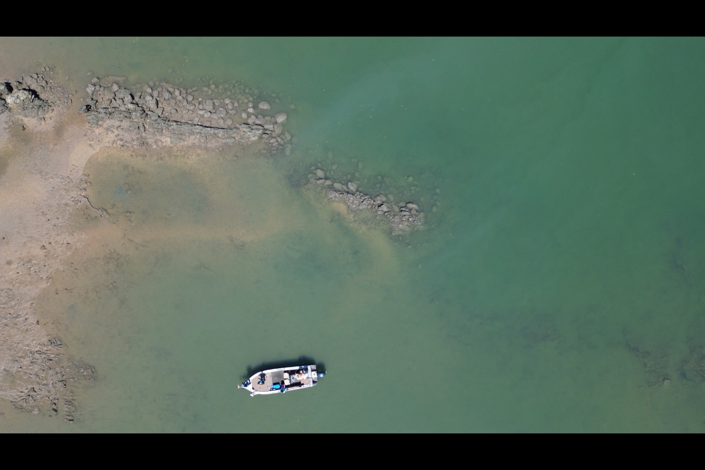

How to fish it
From 16 segments across the archive.
Timber, structure and getting fish out of it. Every quote below is from a real segment — follow it through for the audio and the full transcript.
They're all having a look at the river, which is a bit lower than it normally is for the comp, working out where all the snags are and all the places they need to worry about hitting with their boat.
Fishing on Arvos — 8 July 2026 Fishing on Arvos
So you've just got to be right now when the river levels are dropping in the big rivers and you've got to remember as well after such a huge wet season that there's new obstructions in the form of big old trees and snags and even rock bars and things and definitely mud banks will change after a big season like this.
Bag a Barra — 22 May 2026 Bag a Barra, Oz Off Road Radio
So we're just poking up around all through this rock escarpment and paper bark country and trying to pull a few barra from these snags.
Bag a Barra — 15 May 2026 Bag a Barra, Oz Off Road Radio
They've got a metre 17 just flicking a snaggy point like you would in Down Harbour. They disappear in drains there and massive dewies and huge snapper and stuff.
Guys in the Gulf — Ep 046 Guys in the Gulf
I mean, you're always in the snags or colour changes, right? But now we're, so it's done a few things.
NextGen North #63 — Glenn Watt NextGen North
And then you've got the other issue of people getting snagged on high tides or across the other side of a creek and actually can't retrieve that line until a low tide or then it does get tangled up in something too.
Fishing on Arvos — 11 February 2026 Fishing on Arvos
Say, stay safe, get, go get that van home and tie your boat down, throw all your stuff in the pool and just, uh, just loop, loop some beer in the bottle out for somebody else, will you? Head Bunnings and start cooking snags.
Bag a Barra — 21 November 2025 Bag a Barra, Oz Off Road Radio
We checked out some prime looking creeks, snags and runoffs right through the bottom of the tide, but to no avail.
Finding fish in Darwin Harbour Starlo Gets Reel
I've snagged my plastic on one of the mangrove aerial root spikes poking out of the flat, but it's often possible to twang a snag lure off by repeatedly stretching and suddenly releasing tension on the line.
Pushing light tackle to the limit Starlo Gets Reel
So they had, they were up there fishing overnight, must have been cooking a snag or something in the boat, with a butane cooker, and the gas can exploded, which then somehow caught the boat on fire, and it sunk, and they had to swim ashore.
Bag a Barra — 5 April 2024 Bag a Barra, Oz Off Road Radio
And if you are holding up a big barrow for a photo, and you're in a bit of a sharky spot, like the Daly can have a few at times, to release a barra in that situation, back into some snags or some cover that he can sort of go and hide in and rest up, and away from the sharks and that.
Bag a Barra — 23 February 2024 Bag a Barra, Oz Off Road Radio
And these are great, because there are a lot of roots, and snags, and so forth, so you can just slow roll them through all the roots.
Fishing for barramundi in the Top End Fishing Addiction
We, um, we, uh, the biggest, um, guys landed um, was the 92 and blew another 3 fish about the same size, that the boat got um, taken into snags and um, and this and that and another couple of others.
Bag a Barra — 26 November 2021 Bag a Barra, Oz Off Road Radio
But yeah, we'll go in for some little fellas in the snag shortly after after we catch a big one, hopefully.
Bag a Barra — 22 November 2019 Bag a Barra, Oz Off Road Radio
So with any luck, we might be able to snag a couple of tag fish and even get that $10,000 fish, it would be a good start.
Hooked — Ep 5, Barefoot Fishing Safaris Hooked podcast
And then once we've found some fish or some structure, working some deeper lures around snags and stuff where obviously Barrow in the perch family.
Bag a Barra — 31 August 2019 Bag a Barra, Oz Off Road Radio